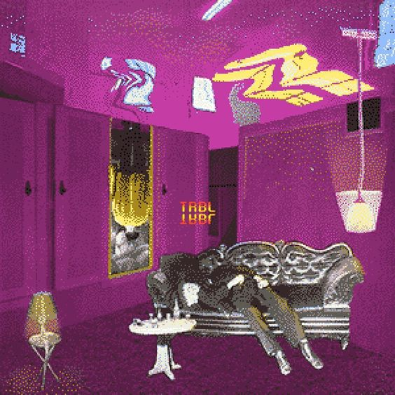

home

about page

about me

my projects
home
about page
about me
my projects
The first project I made was with codepath. I took the Intro to Web Development Course during the fall of 2023. Through this course, I made an informational website about banned books. The website gives a brief history of banned books, explains the importance of books and reading banned books, and in addition, current news about banned books and even an petition. I used html, css and javascript to make this website. This website is still a work in progress and will continue to be updated.
The second project I made is my own personal website. This website is the current website you are looking at. I made this website using html and css. In the future, I plan on using javascript and even a programming language (java or python) to make improvements to my website.
During the fall of 2023, I made a website with a group of classmates for our Software Design class. This website allows users to explore interesting statistics about a country. The data we used was provided by the World Bank Financial Data adn this website explores some of the data provided. These statistics include, the population, percentage with internet access, percentage of country that is employed and more comparisons. The group effort led to the creation and exploration of this This website was made using python, SQL, Flask, and basic HTML and CSS.